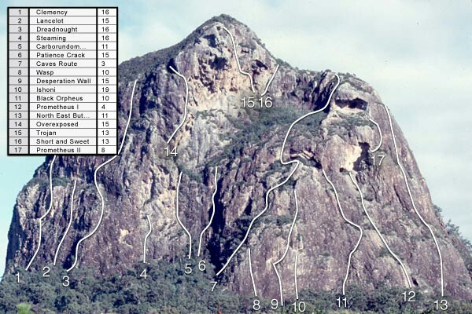
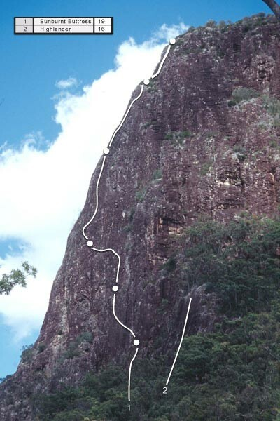
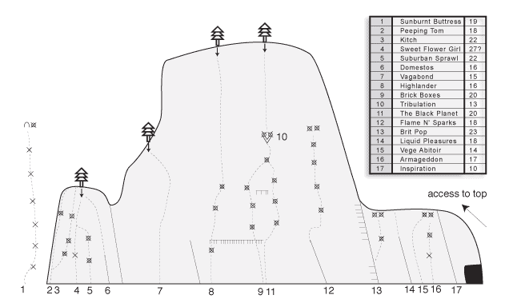
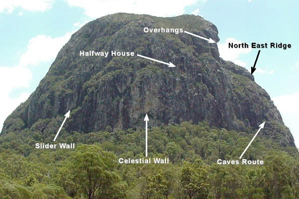

Home > The Guide > Mt Tibrogargan > Ground-Level Routes, Mt Tibrogargan
|
Home > The Guide > Mt Tibrogargan > Ground-Level Routes, Mt Tibrogargan |
|
The following routes are all approached from ground level up the E face track. In order to more easily locate routes on the left half of the E face, routes between Carborundum Chimney and Clemency will be listed from R to L. Routes R of Carborundum Chimney will be listed from L to R in normal fashion. 
Carborundum Chimney 82m 11
Start: 10m or so L of where the E face walking track meets the rock (40m L of the Caves Route). Marked 'CC'.
A time-honoured bumbly classic. So named because of its abrasive properties, this route follows the large, prominent chimney on the E face. When you're wedged in the chimney, spare a thought for when this was climbed with nothing more than a rope and a couple of slings!
1) 25m Originally the crux pitch. Up face, then follow the crack with bridging moves to a rest position. Up face above passing a PR to large ledge. Bridge up the gully to the second ledge. Poor belay.
2) 25m Up easy wall (good pro) to tree. Up and L to enter the chimney. Climb up wide groove to big sling belay in the 'Bomb Shelter'.
3) 17m (crux). Harder since repeat ascentionists have trundled some chockstones used by original party. Bridge up into the chimney to stance and pro. Chimney up past chockstones and hidden PRs (on back wall) to ledge. Belay off large chockstone at back of ledge.
4) 15m Continue up chimney until it finishes at a ledge and TB. From the belay ledge, escape off to the R along scrubby ledge to connect with the Caves Route above Cave 2. Alternately, it is possible to go L-wards up the V-gully and follow terraces up to the summit.
Neill Lamb, Mark Andrews 1955
Insurrection Wall
The next five routes ascend a fine section of cliff named Insurrection Wall. All routes are of premium quality.
Start: 15m L of Carborundum Chimney.
Burly and exciting. Up blocky slab to base of overhung wall. Clip FH and pull into the crux. Jug upwards passing another FH until it eases. Up more easily (wire, big hex) to chains.
Lee Skidmore, Neil Monteith 17/07/1999
Start: About 5m L of First Contact beneath crack.
Waltz up easy slab to base of L-leaning crack. Pull into this and enjoy white Arapilesean rock for 5m before breaking off R and up to first of three black FH’s. Continue up steep face passing two more FH’s to chains.
Lee Skidmore, Menno Smits 21/04/1999
Start: Downhill, 5m L of original.
An excellent variant, adding 8m of quality climbing. Stickclip first FH and pull onto bottomless wall. Push straight up, then traverse R below bulge to second FH. Directly through bulge to meet original at crack at top of white rock. Continue up original.
Lee Skidmore 21/04/1999
Start: 8m L of Insurrection VS at blocky orange corner.
Quite demanding. Strenuously up passing SLCD slots, then slightly R to jugs. Up wall above (wires) tending L to meet LOAJP at the rooflet. Continue up LOAJP.
Neil Monteith, Lee Skidmore 16/07/1999
Start: 2m L of Nine Month Sojourn
An outstanding R-tending line located on the far L of the wall. Stickclip first of five FH’s and pull onto bottomless wall. Crank natural campus rungs (FH, wire) up superb stone to rooflet (FH). Find a way R-wards up steepening wall past two FH’s to chains.
Neil Monteith, Lee Skidmore 16/07/1999
Steaming
60m 16
Start: In vague gully 15m L of Leaving On A Jet Plane, below slab with low red roofs on the R. The belay ledge at the top of this pitch has a tree sticking out horizontally.
Climbed accidentally, thinking that it was the start of Clemency! On the first ascent, Neil used all the rope and soloed the final 8m, leaving Simon to solo the first 8m to tie in. Simon quit climbing soon after! Advice: use a 60m rope. Good advice: avoid this route entirely. Up the slab to the vertical wall, trend up and to the R below loose roofs then climb straight up aiming for the belay ledge with tree. It is safer if you keep slightly to the R of the ledge as the top half below the ledge is quite loose. Protection is very sparse - four pieces were placed on first ascent.
Neil Monteith, Simon Hennig 12/1994
Dreadnought VF
1) 55m (crux) Starts at the base of Dreadnaught’s eighth pitch, where it climbs L into the groove. Don’t! Instead, veer R and climb low-angle slab to stance (poor gear - green alien, #3 peenut). Hard layaway rockover to good crimp. More committing moves with danger of a ledge fall, then good jug. Crack above takes med SLCD’s. Moderately up good slab to a PR in pocket. Hard pulls on good holds through bulge to crack (med-large SLCD’s). Follow easing line up intermittent crack to belay on ledge (PR, SLCD, wires).
2) 20m (10) Veer L up slab to join original.
Darrin Carter, Mark Poole 12/08/2000
Start: On the SE wall about 100m L of Steaming at the 50m high vegetated ramp sloping diagonally R.
Take wires, RP’s and SLCD’s to #3. 255 vertical metres from base to summit.
1) 50m Follow ramp until it finishes on a vegetated ledge.
2) 20m Easily L along ledge and up through obvious weakness in wall above (old pegs) to a ledge and technical belay in corner on R.
3) 10m Up corner, then out to R before cutting back L along ledge to FH and SLCD belay (optional).
4) 40m Up corner on R (tricky), and then diagonally R across slab to bush belay.
5) 35m Up slightly L to the end of the scrubby ledge (Clemency Terrace). Beware loose blocks. Belay.
6) 20m Walk L along ledge to below obvious crack/flake corner.
7) 50m Up corner and at top out R to easier ground. Continue diagonally out R to a large vegetated gully. TB. This is a superb, rope-stretching pitch.
8) 30m Up slab L of gully to ledge and bush belay.
9) 30m Up to ledge and belay in continuation of gully above the Carborundum Terrace.
10) 20m (crux) Enter groove from L (delicate) and straight up to belay at horizontal break at stance.
11) 40m Out L and through juggy bulge. Up easy angle wall to TB.
12) 30m Through scrub and rock walls to summit scrub field. Another 80m above is the summit
Ted Cais, Mike Meadows 16/05/1970
Lancelot
Start: 15m L. Initial visible under small block.
Originally graded 7! Not many routes get their grade more than doubled between one guidebook and the next.
1) 20m Up for 10m to first vegetated ledge. Walk to far L of this ledge to find a good DBB.
2) 30m Traverse R and up with difficulty to a bowl. Keep climbing up and R aiming for the vegetated ledge above. Clip PR before last headwall and climb up the exposed wall to a ledge. Belay off PR and tree stump.
3) 25m Climb onto block on far R of ledge and climb straight up slab to a nice slabby corner. Clip PR and traverse R under blocks to another PR. Climb straight up the wall above (more like grade 18 moves?) with no protection to slab. Up and R to easy slab which ends in an easy corner and PR belay.
4) 16m Straight up corner with good pro to Clemency Terrace and TB. The top of Tibro can be attained by the last three pitches of Clemency or by a big traverse to the L and up the easy scramble on the S face.
Ken Grimes, Peter Kennedy, Eric Hewett 02/05/1966
The next four routes start on the apex of the track.
Lancelittle 15m 14
Start: 6m L.
Nice wall climbing direct to Lancelot's DBB. Runout in the top half. Sling the jug at half height.
Lee Skidmore, Phil Box 22/12/2002
A rope-stretching pitch. Starts 2m L directly beneath impressive bright orange corner 60m up. Up 4m to R-facing sickle-corner. Up this to bulge (silver FH). Steep corner through bulge, then follow LLR up L to join Clemency's second pitch at the PR and white flake. Continue up and then move L to ledge (double rings at base).
Cameron Fairbairn, Phil Box 26/10/2002
Start: 4m L.
This finely sculpted L-leaning thin crack may alienate those without aliens - small SLCD's are a must. Overcome the crack to gain slab where two FH's point the way to the rap station. Sustained climbing at the grade.
Lee Skidmore, Phil Box 22/12/2002
Start: 3m L.
Up past slots to base of short crackline (shrub at base). Up this to clip FH, then pit your tips against some razor crimps to easier ground with FH on bulge. Finish at station as for Alienation.
Phil Box, Lee Skidmore 22/12/2002
Start: Starts 11m L on dark brown rock, downhill from the track's apex at a flat little clearing to belay from under some blocky roofs at 30m, and 15m R of grey rock.
Description kindly supplied by Ted Cais (updated by Lee).
A historical classic adventure climb of great character up the S.E. corner of Tibro to the R of the orange overhanging wall. Named in memory of John Clements who was Les Wood's climbing partner in England. The hardest climb in the State for its day. Although the line is straight, individual pitches zigzag a bit. The major landmarks are the big groove (pitch 3) and the scrubby terrace at half height. Technical hard moves are isolated, but route finding is difficult, protection poor and some holds suspect, so the leader should be very solid in the grade to avoid an epic. There is no obvious LLR and one can easily wander off route into a thrill zone.
1) 35m (15) 10m runout off the deck up blocky slab. A further 10m with a tricky step-left (PR and small SLCD) to R-trending ramp beneath the blocky roofs. Belay on the ramp off gear.
2) 50m (crux) Ascending, traverse 10m R to hollow white flake below bulge (the original aid move complete with PR). Back up the peg before carefully cringing up R to easier ground. Up a ways until you can traverse L to ledge below the huge corner (rings at base - 50m rap to ground).
3) 50m (14) An excellent pitch. Up initial corner and through small rooflet to continue up into the huge corner. Exit out R and up to rap anchor on tree on Clemency Terrace. Walk 20m L along ledge to the base of a R-trending ramp.
4) 35m (12) A tricky start that would demolish grade-12 leaders is the key to continuing up remnants of the big groove. Struggle past loose blocks and prickly grass defending good hex placements along the slanting crack R to a stance.
5) 30m (9) Up and trend L to below final corner capped by large blocks suspended in anti-gravity mode.
6) 30m (11) This overhanging time bomb is defused by an exciting move L followed by a mellow romp up the rib and ejection into the summit scrub field.
A thousand cuts must now be endured passing through vile scrub to attain sanctuary and clemency (?) on the tourist track.
FA Les Wood, Donn Groom 19/04/1966. FFA Unknown.
Now we jump back to the Carborundum Chimney area where the routes will be listed from L to R. The walking track from the carpark along the east face meets the cliff at this point.
Start: 8m R of Carborundum Chimney at a big tree.
This is a great, well-protected route.
1) 40m (crux). Up nice crack to top of white rock. Trend L and up to ledge then continue up and R for 18m to base of crack. The crack is a bit tricky.
2) 24m Follow the obvious crack straight up, by layback, bridging and wall climbing. Gain stance where Faith crosses wall and belay off tree.
3) 22m Traverse R and up continuation of corner, to finish on ledge and TB. Up easy rock and some scree, then out R to join the Caves Route.
Les Wood, Donn Groom, Woody Milroy 21/06/1966
Faith
Start: Diagonally up and to the L of the start of the Caves Route at a small, flat ledge at the bottom of a series of sloping ribs. Marked 'F'.
This is a hard grade 12 - exposed and poorly protected.
1) 32m Diagonally upwards to the R across the sloping ribs and then up and onto a small ledge on the crest of an obvious nose. Slightly back to the L on downward sloping ledges to the base of a small, loose wall. Up this wall to small tree runner. Continue up the wall and then out to R onto lightly vegetated shelf running up to the L. Steelwood TB at L-hand edge of shelf.
2) 18m Directly up behind tree and into the obvious groove above. Up the groove/crack in the corner and out onto the L-hand wall. Straight up to a small stance.
3) 13m From stance, climb straight up small wall to L of crack and then ascend diagonally L over small rib. A traverse leads to the L over a series of sloping ledges for 10m to two wide, flat ledges in the middle of the face. Belay.
4) 18m Straight up the wall above for 5m, and then a delicate traverse to the L leads to the wide crevice in the corner. Step across the gap and then up to prominent shelf on the far wall.
5) 23m Climb the 3m wall behind the ledge to the start of a rubbishy gully. Up through the gully, or out onto the L-hand bounding rib (much cleaner) to large TB. From here, the exit of Carborundum Chimney is joined and scrambling to the R leads eventually to the Caves Route.
Bill Peascod, Neill Lamb, Julie Henry 21/05/1955
Start: 20m R of where the E face walking track meets the rock. Marked 'CR'.
Queensland's own mountaineering-style classic that has introduced the climbing experience to many a gibbering bumbly. This has always been the traditional easy route up to The Scrub (below the summit overhangs). With the recent addition of two rap stations, it provides an easy, safer E-face descent than scrambling. Most of the rock on the route is quite worn making route-finding easy. Many parties rope up for three pitches, interspersed with unroped scrambling. To start, scramble up vegetated ledges following worn track to below wall with gully on L side. Up the gully to top and TB.
1) 20m Traverse out R and up rock 'steps' with surprising exposure to ledge and mouth of Cave 1. Belay off rap station.
Scramble into Cave 1 and up into the big Cave 2. Walk to far L side of this.
2) 30m Traverse carefully out L side of cave until possible to move up to ledge. Up steep wall above with little pro to ledge and rap chains on R.
From the ledge follow the worn track through the scrub for 100m or so until you hit rock again. Walk R along cliff base to below obvious easy chimney on south facing wall.
3) 20m A hard start gets you in the chimney which is easily climbed to top. Follow the ridge W to summit of Tibro.
Bert Salmon 06/06/1926
Keloid 45m 9
Start: About 70m down R from the Caves Route at low angled wall. Marked 'K'.
Up 15m of slab below a small buttress. Then up the centre of the buttress to finish at Steelwood trees in a grassy area. The Caves Route is 10m L at this point.
Dennis Stocks, Neill Lamb 1966
Wasp 85m 10
Start: Start about 10m R of Keloid at the foot of a scoop of easy angled slabs. Marked 'W'.
This route is considerably undergraded.
1) 36m Up the slabs and diagonally L across the top side of a gully. Continue on a L trend until steepness eases to worn slabs. Continue on up to the L for another 4m into a gully and dodgy TB.
2) 18m Climb back down and traverse directly R along small ledges across to a piton below a groove. Continue R and slightly down for 3m to twin PRs. Belay off these and wires.
3) 29m (crux) L a bit, then straight up to base of a groove. Up this ('Wasp Groove') with adequate pro to sloping rock and TB. From here, scramble up and L to connect with the Caves Route.
Neill Lamb, Dennis Stocks 22/01/1967
Wasp RHV 70m 12
Start: Same as for Wasp.
1) 40m Virtually straight up to the twin PR belay at the end of Wasp’s second pitch.
2) 29m Same as for pitch 3 of Wasp.
J. Mather, M. Siwek, K. Jesienowski 10/07/1983
Directissima
Start: Between Wasp and Desperation Wall. Marked 'Di'.
This route is underprotected - beware!
1) 28m (crux). Up easy slab, up onto the wall and trend slightly R and up to PR, then on up to a bulge. Up a R-trending groove in the L-side of the bulge, then slightly L of white streaks to a belay on ledge.
2) 41m Climb directly up from ledge to find PR at 11m. Continue straight up to overhanging wall, then a short traverse L to base of groove. Finish up 'Wasp Groove'.
Paul Caffyn, Mike & Chris Meadows 30/12/1967
Start: At the base of an impressive blank wall about 10m R of Directissima. Marked 'DW'.
This route climbs good solid rock but is dangerously runout. Note that various other finishes have been done, but the best is as described.
1) 22m This pitch has very little protection. Straight up on nice rock for 8m, then traverse diagonally R with care on sloping holds (poor #3 SLCD in pocket) to ledge and belay.
2) 17m Traverse L for 5m then up scary, thin wall with little pro with a slight R trend, then up to small ledge and BB.
3) 50m (crux) Straight up for 5m to vertical wall. Turn this wall to the L and head for the yellow overhang (PRs). Continue up shallow corner (med wires) skirting overhang on R to ledge and bush belay.
4) 25m Continue up into Cave 1.
Ron Cox early 60's
Desperation Wall UQBWC Finish 100m 6
Start: In the belay cave on top of pitch three of Desperation Wall.
1) 33m Traverse down from cave to R below big overhanging bulge. Traverse horizontally R passing Ishoni's chains to ledge and TB.
2) 32m (crux) Ascend straight up past some loose rock to ledge and TB.
3) 37m Continue vertical line on great rock and holds to groove on R. Up groove to TB. Scramble up to Cave 3
Ron Cox, Pat Conaghan 1962
Start: Scramble up onto vegetated terrace 20m R of Desperation Wall, then walk off L-end of terrace 3m to tree. Belay out of wide crack.
A proud line. Double ropes almost essential. Up L around bulge, then up to first of three black FH’s. Up and L to ledge (big gear). R off ledge to horizontal break in superb marble-like stone, then back L to FH. A long, undercling reach, then up to the last FH. RP's take you up the ever-steepening wall, then a good wire and a thankful rest on easy ground. Slab to chains. Well protected with careful placements.
Lee Skidmore, Aaron Jones, Neil Monteith 31/07/1999
Start: About 30m R of Ishoni at big corner/gully. Marked 'BO'.
A great, easy multipitch route although pro is pretty sparse in places. A good initiation to Tibro multipitches. Can be done in three pitches with 50m rope.
1) 20m Very easily up gully on big jugs and good pro to ledge and TB.
2) 45m (crux) Up wall above ledge to slabby stance. Traverse R up this slab with little pro to another ledge and optional shrub belay. Walk to far R of ledge. Climb up edgy slab in an exposed position with no protection until it eases and you reach a tree-lined ledge. Scramble up L to the top of the ledge and TB.
3) 40m Bridge up outside of chimney which is better than it looks. Scramble up trending L and find a nice spot to belay.
4) 40m Slab very easily up L to finish up in Cave 3.
Finish up the Caves Route, or descend via rap station at mouth of Cave 1.
Sid Tanner, Andrew Spiers 24/07/1969
Black Orpheus Variant 35m 10
Start: At end of pitch three of Black Orpheus about 5m R of the chimney.
Start up short crack, then diagonally L past old PRs on great rock. When you hit the chimney, climb the wall R of it on good holds to an easy scramble and TB.
Unknown 1960's
Orpheus 150m 8
Start: About 20m R of Black Orpheus. Marked 'O'.
This route is fairly contrived.
1) 25m Up an open rock gully to a TB.
2) 29m Trend R over a horrendous flake, then diagonally up to a TB.
3) 27m Up slab trending L to a line of small trees. L along dirt ledge to the face R of the Black Orpheus chimney. This ledge is the same as the end of pitch three of Black Orpheus.
4) 28m (crux) Up onto the wall R of the chimney. Traverse R-ward around to rubbly gully. Up this gully to a TB. This is the same belay as the top of pitch three of Prometheus I.
5) 40m Finish as for the fourth pitch of Prometheus I.
R. Brooks, G. Baines 25/08/1957
Earthenware
This route climbs the delightful white streaked slab 3m L of prominent corner, just L of Prometheus I. It has little pro but great rock. TB.
FSA Neil Monteith 13/06/1996
Prometheus I 120m 4
Start: In big gully about 30m R of Orpheus on the E face. Marked 'PI'.
This route has many variations - this description is only one of them.
1) 23m Climb up into the rock gully, walk R along tree thicket then scramble L and up to base of steep rock.
2) 27m Climb rib to the R of the belay using large holds. A tree runner is at the top of this. Continue tending L over loose and broken rocks to TB.
3) 20m Traverse R from belay around buttress, then up to TB.
4) 32m Ascend to short vertical wall which reaches across the face. Traverse across smooth slabs below the wall to a large dead tree, which is the belay.
5) 32m Traverse back L across the top of the wall over easy rock to a host of TBs.
6) 10m Scramble up short rib and cross to large tree below final wall.
7) 17m Climb up into chimney from belay tree. From here, Cave 4 can be reached by continuing up the chimney and eventually climbing out to the R, or several ways exist of climbing out to the L.
Neill Lamb, Ron Brooks 1953
The North-East Buttress 300m 11
Start: To find the start of this route, continue down and N from the start of Prometheus I for about 80m past a short vertical wall to find a vegetated gully.
This route is extremely long and route finding is difficult, but it does have the merit of good rock and little vegetation.
1) 20m Easily up gully to TB.
2) 28m Up for 5m then R around the buttress below some loose blocks. Keep traversing around to the R, ascending slightly to gain a spacious ledge and natural gear belay.
3) 37m Ascend R from ledge to short wall. Traverse this to the R and above PR in block. Now ascend tending R slightly up to TB.
4) 27m Cross to the L on sloping ramp up to TB below buttress. Stance on spacious ledge.
5) 33m Straight up on good rock to PR belay below steep wall.
6) 18m Traverse R around buttress and up into a wooded gully, below a steep, yellow groove. TB. You can escape from the route here by traversing L to meet Cave 4.
7) 37m (crux). Up wall on L, traverse L over big loose block then up to yellow patch below steep wall. Up bolt ladder (originally aided) with hard moves, then traverse R below big block to BB.
8) 33m Pass under block traversing L, then straight up tending slightly R to small bush and ledge. BB.
9) 33m Straight up past mangled bolt (useless) to second BR. Delicate move past this straight up past two more mangled bolts. Gain easier ground. TB.
10) 33m Scramble out to L on sloping ledge which leads to NE shoulder.
Paul Conaghan, G. Hardy 1965
Rock Garden 225m 11
Start: About 100m R from NE Buttress below obvious large chimney (10m L of pillar with FH’s).
This route is loose and has tricky route-finding.
1) 33m Up wall below chimney. Tricky move L around overhanging flake. Move up trending diagonally L until vertical ascent can be made to the base of the chimney. Ascend chimney (narrow and strenuous) climbing out onto main rock wall when chockstone is reached. Climb onto this chockstone and continue on to top of buttress to large tree for belay.
2) 37m Vertical ascent for 8m then horizontal traverse R to seams. Straight up to a small niche/alcove, then belay off natural gear.
3) 40m Delicate move out of belay up L. Ascend until short R traverse can be made into scunge-filled crack. Ascend vertically about 7m and then traverse L, up and out of crack. Tree runner. Continue ascent through scunge until a diagonal R traverse brings you to a large TB below a blank wall.
4) 37m (crux) Climb steep ramp in front of belay tree to tree runner and ascend onto vertical wall. Climb directly over loose holds, leading to a delicate traverse on small holds. Handholds around corner of bulge lead to wide shelf and TB.
5) 40m Straight up over extremely sloping horizontal strata to ramp. Follow ramp R until you get to a TB.
6) 37m Straight up over good holds to NE shoulder.
John Tillack, Dennis Stocks 07/08/1966

Start: Start as for Rock Garden (just L of Peeping Tom pillar on Shadow Glen).
Lots of rock, bolts, and air; a Lost Boys style adventure for the masses. Bring SLCD’s 0 - 3, Wires, 8 Brackets, and helmets. Route gets sun until 3pm, hence the name!
1) 28m (18) Up Rock Garden for a few moves then climb wall on R past six BR's to U-bolt anchor.
2) 30m (15) Trend easily L across Rock Garden to FH. Keep climbing diagonally L past another three FH's and a BR, then run it out with marginal gear to small ledge and U-bolt anchor.
3) 25m (crux) Beware - lots of loose rock on this pitch. Lee copped a falling rock on his back on the first ascent. Straight up past three BR's then traverse directly L over rotting rock past one BR and two FH's to arrive safely on ledge with U-bolt anchor. You’ll need a confident second!
4) 36m (16) Start going L then up exposed headwall with improving rock quality past seven BR's to reach U-bolt anchor.
5) 45m (14) Finally some good rock. Trend slightly R past thin cracks heading for the dead tree up high. Five BR's and some assorted small SLCD’s will get you to a large vegetated ledge and big chain.
6) 20m (10) Easily up wall above to arrive at bushes and the north-east summit ridge. No protection on this pitch. Double ring belay.
To descend: Rap down three pitches then rap straight down to gully and big tree. One more rap from tree will get you on the ground. Allow 1.5 hours for descent.
Neil Monteith (led all), Lee Skidmore 19/03/2000
Shadow Glen 
The next routes are situated on a compact wall named Shadow Glen just R of Rock Garden. The routes are a mixture of bolted and naturally protected routes on great rock. A small cave at the far R of the crag can be used as a rain shelter. The first routes are on an obvious detached pillar with FH’s.
Peeping Tom 8m 18
First route on pillar with FH near top. Boulder start to crack - up this to stance. Climb the face above past silver FH to juggy top. Tree belay. A bit dirty at start.
Neil Monteith, Stephen Monteith 07/01/1997
9m 22
Good stuff! Starts at same point as Peeping Tom, but traverse directly R to first of three black FH’s. A pronounced crux lunge will get you to the second, then it keeps you going past the final FH to top. Rap off tree or downclimb easy corner.
Lee Skidmore, Aaron Jones, Neil Monteith 04/02/2000
Sweet Flower Girl (open project)
Start: 2m R of Kitsch.
Not too inspiring. Up very thin face past bolt to join with second bolt of Kitsch.
Attempted by Marten Blumen, Neil Monteith 10/1996
Start: 2m R of Sweet Flower Girl.
A technical wake-up call. Jug up to FH. Hard moves lead to second FH. Traverse L and up to big jug. Slam in #2 flexible SLCD behind jug and climb up to crack (SLCD). Traverse R and up to tree belay.
Neil Monteith 24/03/1996
Suburban Sprawl Variant 15m 21
Start: As for original.
From second FH climb up and R to finish up Domestos.
FTRA Karl Curnow 16/03/1996
Domestos
Start: 2m R of Suburban Sprawl.
Up very thin crack (good RP's) to slabby face above. Up this very boldly with no pro to toilet-bowl stance then slab up to tree belay. Dangerous.
Neil Monteith, Karl Curnow 24/03/1996
The next routes are on the main wall about 5m R of the pillar.
Vagabond 35m 15
Start: On wall about 10m R of pillar at odd looking rock face.
Up on good positive edges with marginal protection for 10m. Keep climbing upwards past cracks until on ledge with big loose block. Climb up the wall on the R side of this to slab and tree belay on L. Reasonable protection and good rock.
Neil Monteith, Karl Curnow 21/04/1996
Start: 5m R of Vagabond and just R of scungy crack.
Up wall past FH to stance. Edge up slab above on good finger holds trending slightly R (2 FH's) until you reach the cracks. Fill these with pro then continue up easier slab above on minimal pro to final headwall finish. A small RP and various sized SLCD’s protect this last 10m. Tree belay. Average protection up a sustained slab.
Neil Monteith, Marten Blumen 16/06/1996
Start: 10m R of Highlander.
A tribute to urban development. Up wall to ledge. Up R side of this (FH) and crimp onto slabby face (FH). Trend L and up to stance (FH). Traverse R and up wall above passing a FH to chain. An edgy sport climb.
Neil Monteith, Alister Robbie, Karl Curnow 21/04/1996
Tribulation
Start: At Brick Boxes' chain.
Climb wall above on marginal protection to top and tree belay. Excellent marbled rock in middle half.
Neil Monteith, Karl Curnow 21/04/1996
Line of four black FH's up excellent face 2m R of Brick Boxes with a bouldery crux at the bulge. Finishes at BB's anchor. Was originally a variant of BB and was led without the first three FH's.
Neil Monteith, Marten Blumen 11/08/1996
Start: 4m R of TBP below obvious L leaning thin crack.
Sustained and technical - one of the best here. Up crack to top (gear) then runout traverse R and up to FH. Climb unlikely wall above (FH) on surprisingly good holds to slabby stance. Continue up past two more FH's to lower off anchor.
Neil Monteith, Marten Blumen 14/07/1996
Brit Pop 15m 23
Start: 6m R of FS at vegetated corner.
A contrived offering. Easily climb corner for 8m until a large jug is found on the R wall. From this swing R onto wall (#1 SLCD in crack). Clip FH and edge like mad up bulging rock to anchor. Has been onsighted, but can you say sandbag?
Neil Monteith 12/04/1997
Liquid Pleasures
Start: 3m R of BP.
Best left alone. Up the crack until it blanks out. Climb the face above on sideclings and poor RP protection to vegetated ledge and tree belay far back. A bold finish.
Neil Monteith 18/05/1996
The next three routes are on a short slabby wall about 20m L of the cave and about five metres R of LP.
Vege Abattoir
Start: 2m L of Armageddon.
Up slab, over small roof to finish at A's chains. Rock is good but protection is non-existent.
FSA Neil Monteith 13/06/1996
Start: Start 5m L of obvious curving crack (Inspiration).
Popular. Up easy edgy slab to bulge and BR. Over this with difficulty to slab and FH. Up this past 'fish bowl' jug to double rap anchor. Excellent rock.
Ana Greer, Neil Monteith 18/05/1996
Start: At the big crack just R of A.
Up the crack on good pro and great rock to A's rap anchors. A perfect beginner route if clean.
Karl Curnow, Neil Monteith 21/04/1996
A smooth, slabby bouldering wall is situated just R of Inspiration. It is a good warm up for the harder routes.
North Face Route 85m 8
Start: At the base of the central N face. Marked 'NFR'.
A bush-bashing affair with some rock here and there.
1) 35m Almost straight up, zigzagging slightly to find LLR to a gully. TB.
2) 12m Out of the gully to the R, and up to trees. From this stance scramble unroped up sloping rock (grade 1) dotted with trees to dense undergrowth. Bush-bash straight up to a buttress and follow around to the R and up to a rock wall.
3) 20m Up a rock gully on the L to a TB. Emerge from the undergrowth to find a slab.
4) 20m (crux) Trend L up the rough slab to a TB. Scramble up L over easy rock and through undergrowth to NE shoulder.
Nobody ever owned up
Felp 200m 10
Start: At the base of the NW face. Marked 'F'.
Start at the base of the NW face. Marked 'F'. This route is a very indirect bush-bash with one decent rock pitch. To find this roped pitch you must climb a wide gully on mank and grade 1 rock until angle steepens at orange-yellow streaks up on the L. Traverse R along this ledge to the end. Up diagonally R on grade 1 rock to the base of Felp proper.
1) 15m Virtually straight up to a ledge and TB.
Follow LLR diagonally R, then traverse R over grade 1 rock. Continue along a dirt ledge, then up. Diagonally R on grade 1 rock to scrub. Bush-bash to the summit through undergrowth and over mank and easy rock.
Shane & Col Smithies 17/09/1977
West Track - -
This is the tourist track, which climbs the manky face on the W side. The track starts from the National Park picnic area on the W side, and thanks to erosion is now visible from space. It requires no climbing experience and is in reality a rambly, steep bushwalk. Depending on fitness, the walk up takes 35 - 50 minutes. It is the preferred descent route for many of the multipitch routes on the E face. The rock is marked at intervals with paint, and the lower half is peppered with interpretive signs, fences and benches (and they whine about the odd bolt?).
Tom Welsby 1886
Microtome 100m 14
The first known technical route on the SW corner. The SW corner of Tibro contains a relatively clean and smooth 60-degree slab. It is bisected by a scrubby ramp that traverses diagonally up from R to L, starting under a vertical section of cliff on the S face proper and ending at the tourist track halfway up the W face. This route takes a direct line up the centre of the clean slab wall and ends on this scrubby ramp (a direct continuation is possible). Descent is by easy scrambling down the ramp to the right.
Pitches 1, 2, 3: Straight up middle of wall. A small overlap is surmounted near the top of the third pitch. Pleasant and delicate climbing on good rock with occasional thin-crack protection.
Ted Cais, Blair Roots, Mike Meadows 24/03/1973
The following routes are located on the S face. Access as described for Slider Wall below.
Better You Than Me 50m 18
Start: About 30m L of On Bended Knee at wide, low-angled crack.
1) Follow crack until it runs out and start slab climbing trending L to a BR. Easy moves to DBB.
2) From DBB, stand up and clip FH before moving L across slab past hollow flake to roof/overlap (small wires). Through (#3 RP), then weakness above on low angle wall with SLCD’s and a FH to chain. Rap off with double ropes.
Scott Lawrence, Gary Meyrick 09/1999
On Bended Knee 45m 17
Start: Step onto wall from L end of RD’s start ledge.
This route is a direct line to Rain Drops’ chain.
1) 15m (8) Solo up easy rock to DBB on large ledge. No pro.
2) 25m (crux) From belay, climb up to two good wires at 3m, then up trending slightly L to FH. Take obvious weakness through bulge (wires, red alien), to BR 2m above. Up and R to small ledge and RD’s chain. Rap off with double ropes.
Scott Lawrence, Neil Monteith 09/1999
Start: On the south face, about 200m L of the South Face Route / Slider Wall. Look for a jutting prow of white broken rock about 50m up. This route starts on tree-lined ledge, above ground level, about 15m R of the prow.
1) 15m (10) Up easy buttress with good pro to ledge with large pocket. Belay off several large SLCDs.
2) 35m (14) Trend L and up past PR and fixed RP into faint, L-leading weakness. Follow this with minimal protection to small ledge and chain. Rap off with double ropes.
Gary Meyrick, Scott Lawrence 11/1999
South Face Route 185m 8
Start: Start at the base of the central S face in an opening to a ravine. Marked 'SFR'.
This is an extremely vegetated climb, not recommended to pure rock artists or to the inexperienced route-finder. To gain the first pitch, climb up the wide ravine on grade 1 rock for 75m, zigzagging to find LLR to yellow rock corner. Traverse R-ward along base of the rock face for approximately 20m.
1) 18m Up a broken rubbly gully, past an old PR to a TB.
2) 26m Continue up with a slight R trend, past more PRs following LLR to a TB. Up into bush and rubble - at this point you have two alternatives. 1: Continue on up diagonally R, through undergrowth and mank to the SE corner then bush-bash to summit. 2: Trend L on grade 1 rock until yellow overhanging rock is in view. This rock is above the yellow corner.
3) 32m From a TB, traverse L across an exposed, vegetated ledge and up a short rock pitch. Belay above the yellow overhang.
4) 24m Straight up, then rock and vegetation to a wall. TB.
From here scramble L along base of wall for 35m and across a small stretch of slab.
5) 40m From a TB climb up a wide gully (thick vegetation). Then up a vertical, vegetated gully to a TB on the L side. Continue up the gully to a white corner.
6) 47m Up slabs adjacent to the corner for about 10m. Traverse R for another 10m then up to top.
Unknown
Slider Wall 
The next routes are located on the L wall of the South Face Route gully. The best way to access this area is directly from the E-face carpark. From the carpark, don’t take the small track to the east face. Instead, walk west along the fire trail for a few hundred metres. Walk along until you’re about level with the big, white open gully on the cliff (plainly visible). A vague track leads R up through the low scrub to Slider. Walking time to base of gully 15-20 minutes. To make the descent down the gully safer, the boys have installed a rap station 20m L of Howler (doubled 50m ropes required).
Blowing Bubbles 15m 17
Start: At base of gully below black FH's.
Up past FH then move L onto small ledge (FH). Continue up with crappy wires then trend R to L end of roof (crucial slung med SLCDs). L onto wall above (very poor gear) to ledge and rap station.
Scott Lawrence, Gary Meyrick 19/12/1999
Start: 5m R.
Sharp crimping up the steep, pock-marked face with four FH’s to rap station.
Scott Lawrence, Gareth Llewellin, Gary Meyrick 06/1999
Scramble carefully up the gully for 50m utilising some fixed ropes along the way until you hit the next routes on the obvious overhung L wall.
Up Howler for three FH’s, then traverse L (crux) past two black FH’s. Keep the pump going up steep ground past another black FH and runout to rap station.
Gareth Llewellin, Lee Skidmore 16/01/2000
Harder than the original. Traverse up L at Howler’s fourth bolt along rails to FH and a huge dynamic crux. Rap station out L as per Squealer.
Gareth Llewellin 12/12/1999
The best sport route in the Glasshouses. Originally 25. Superb moves on mostly big, flat holds. Five FH’s with a late crux to rap station. Gareth’s done it cleanly up, down, weighed down, in slow motion, and with bare feet. Seriously.
Gareth Llewellin 12/12/1999